La Mia Produzione Artigianale
Il cuore di Tinifa è la coltivazione di essenze botaniche, con la lavanda (Lavandula angustifolia) protagonista indiscussa, accompagnata da calendula, melissa e menta.
Nel mio laboratorio interno la trasformazione avviene seguendo metodi tradizionali e artigianali per creare prodotti puri e dedicati al tuo benessere:
Cuscini alla Lavanda
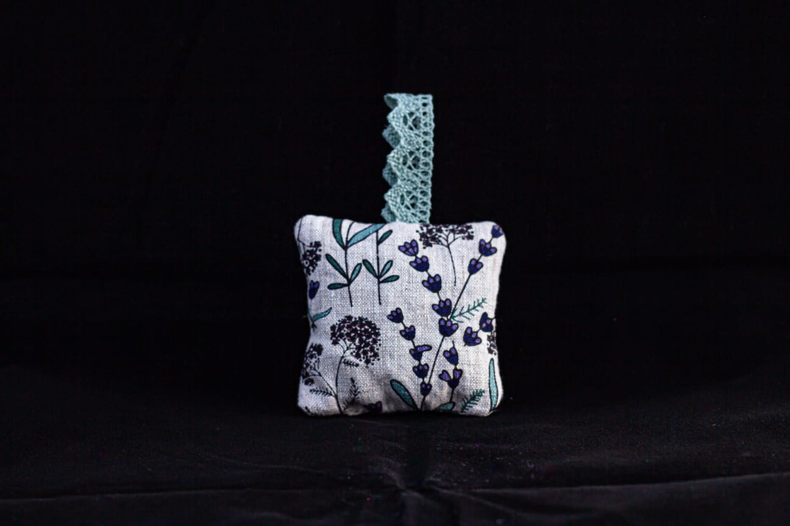
Cuscino Aromatico Floreale
Cuscino artigianale profuma-biancheria imbottito con fiori secchi di lavanda dei nostri campi.
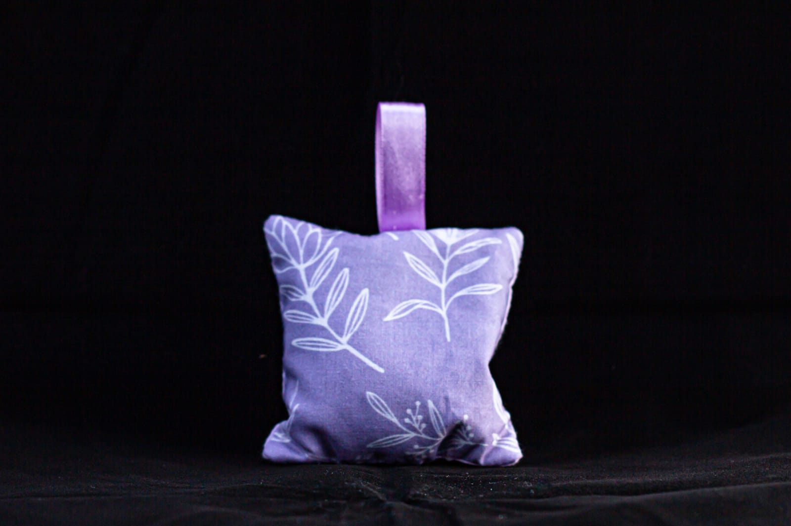
Cuscino Aromatico Viola
Cuscino profumato in stoffa viola, ideale per armadi, cassetti o da tenere vicino al cuscino.
🌿 Olii Essenziali Puri
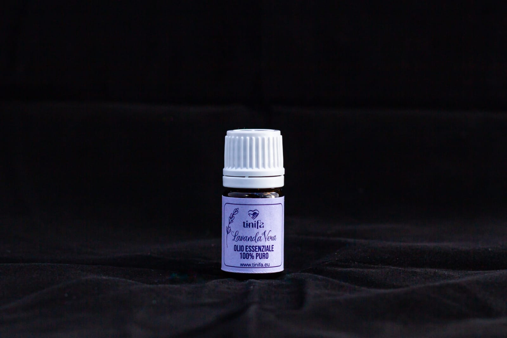
Olio Essenziale 100% Puro
“Lavanda Vera”Estratto con sapienza per preservare intatte le note aromatiche, ideale per profumare gli ambienti.
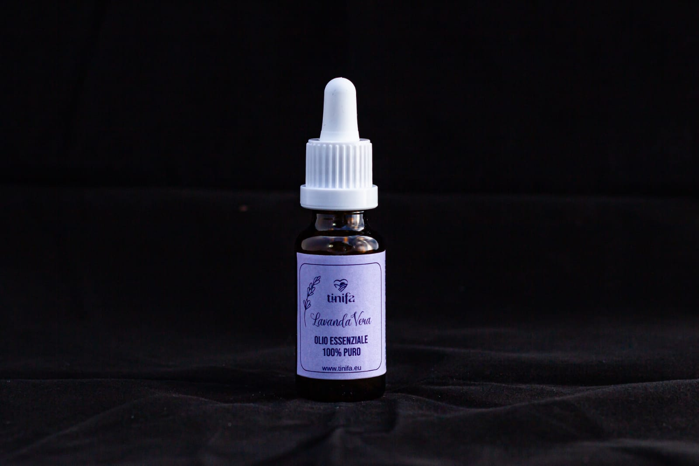
Olio Essenziale 100% Puro
“Lavanda Vera - Formato Piccolo”Olio essenziale puro in pratico boccettino con contagocce per portarlo sempre con te.
🌸 Linea Cosmetica & Cura
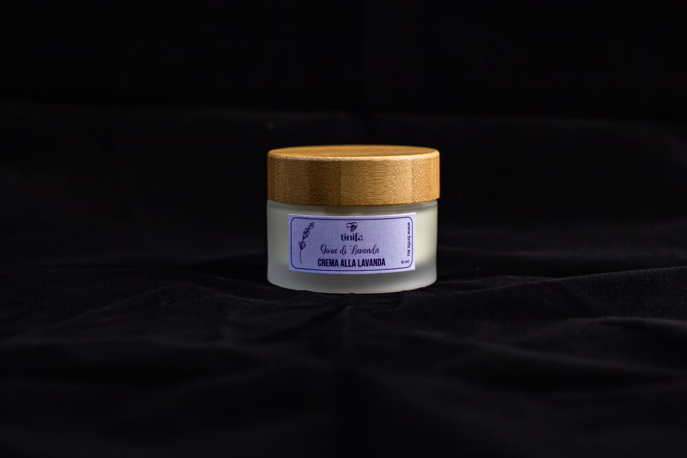
Crema alla Lavanda
“Gioia di Lavanda”Crema idratante ristrutturante con burro di karitè, olio di mandorle, jojoba, miele e proteine del grano.
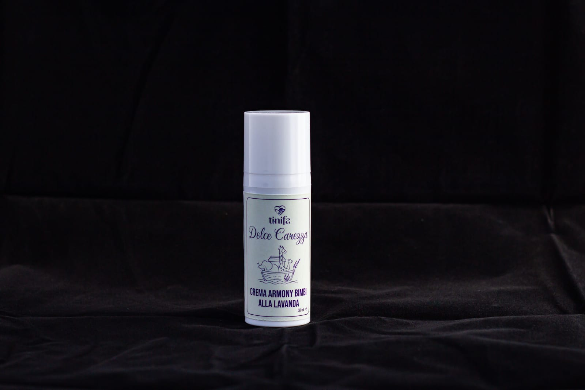
Crema Armony Bimbi
“Dolce Carezza”Crema naturale con lavanda, melissa, camomilla e fiori d’arancio. Idrata, lenisce e dona calma alla pelle.
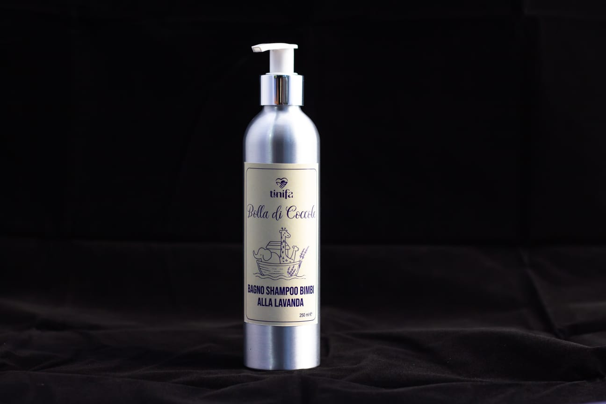
Bagno Shampoo Bimbi
“Bolla di Coccole”Detergente naturale e rilassante con acqua di lavanda, aloe, calendula, camomilla e fiori d’arancio.
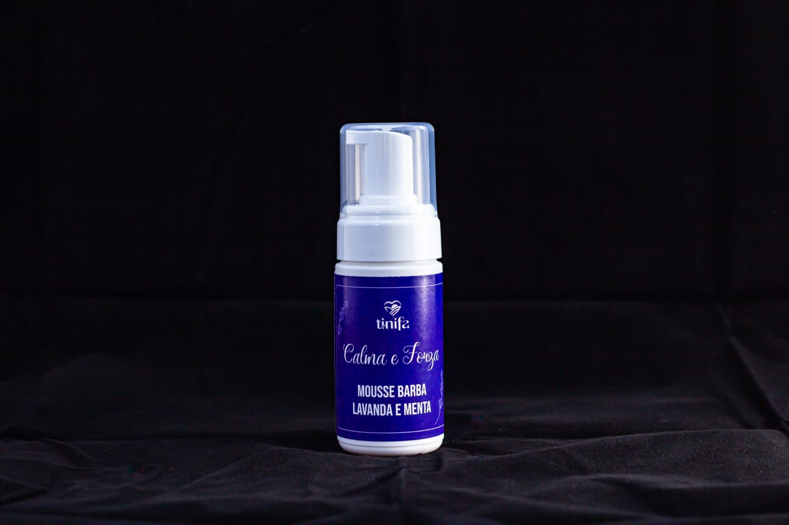
Mousse Barba
“Calma e Forza”Mousse naturale e rinfrescante con lavanda, menta e timo. Assicura una rasatura delicata e morbida.
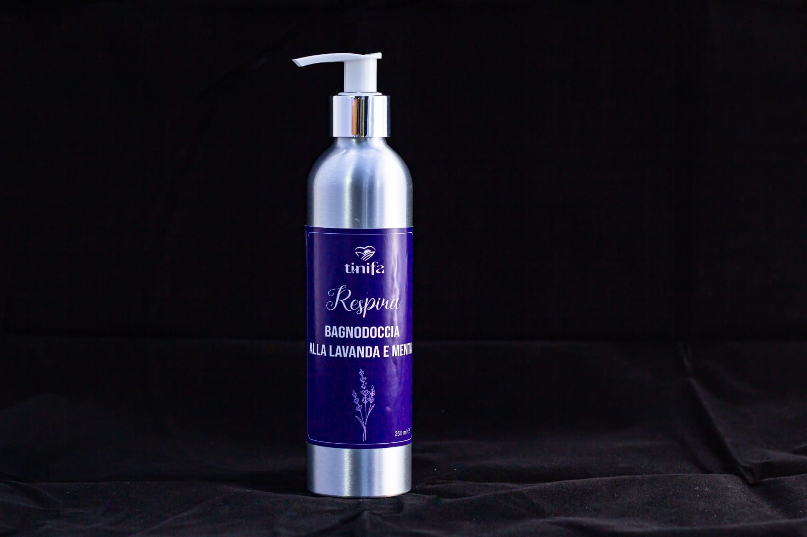
Bagnodoccia Lavanda & Menta
“Respira”Bagno doccia naturale con lavanda, menta, timo e verbena. Pulisce dolcemente e tonifica la pelle.
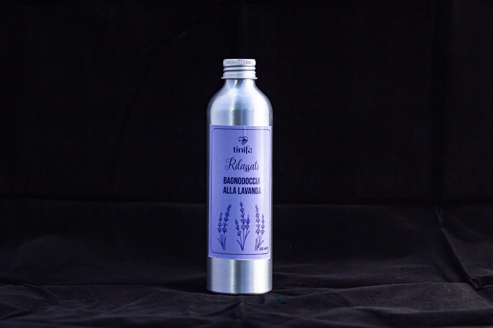
Bagnodoccia alla Lavanda
“Rilassati”Detergente naturale con olio essenziale di Lavanda officinalis, ideale per il relax di tutta la famiglia.
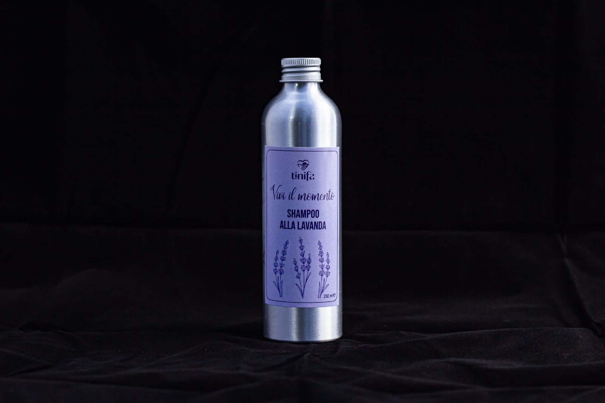
Shampoo alla Lavanda
“Vivi il momento”Formulato con tensioattivi vegetali ed estratti di calendula, malva, aloe vera e lavanda.
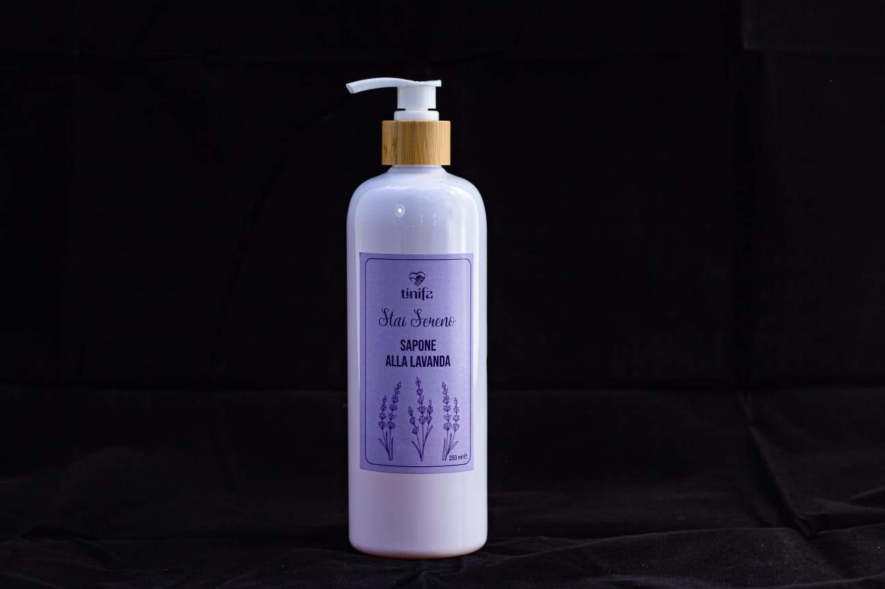
Sapone Liquido alla Lavanda
“Stai Sereno”Formula delicata con olio essenziale di Lavanda e glicerina vegetale per una pulizia dolce e rispettosa.
🏺 Creazioni in Ceramica Artigianale
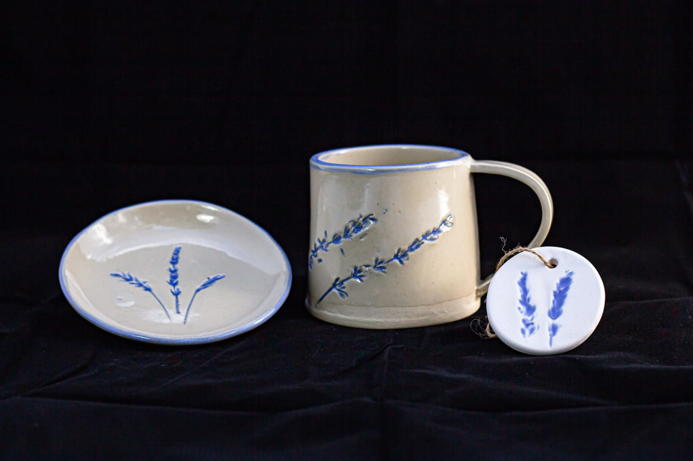
Set Ceramica Decorata
Creazione artigianale fatta a mano con decorazioni ed impronte botaniche di lavanda.
Un Luogo d’Incontro e Condivisione
Tinifa nasce come un ambiente aperto e inclusivo, pensato per accogliere chiunque desideri riscoprire la bellezza del tempo vissuto secondo il ritmo della natura. Attraverso le mie attività agricole e le iniziative sul campo, promuovo momenti di incontro e percorsi di agricoltura sociale in cui la natura diventa lo sfondo ideale per riscoprire il valore della semplicità, della relazione e dell'accoglienza.


Perché Scegliere Tinifa?
Scegliere un prodotto o un'attività Tinifa significa sostenere un progetto autentico, che unisce la passione per la terra alla professionalità educativa e sociale. Ogni creazione nasce dal lavoro che svolgo personalmente o insieme a persone fragili, garantendo che ogni passaggio — dalla semina alla confezione — rispetti i criteri di sostenibilità e artigianalità.
Tinifa è il risultato della mia passione quotidiana: un invito a fermarsi, a respirare e a riscoprire, nella natura e nella relazione, una fonte inesauribile di bellezza e benessere.